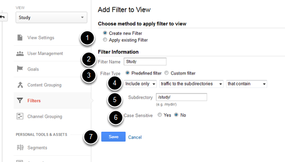
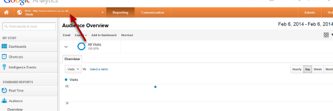

You can set up a View in Google Analytics to create a specific set of data. To do this you need to set up a View and then a filter which limits the data recorded in the View.
Log into your Google Analytics account and click on Admin.
Click on the All Web Site Data drop down list.
Click on Create new view.
Click on + New Filter.
To set up a filter which records traffic to a specific directory eg the study folder:
See the Google Analytics Help site for information on the different types of filters you can set up (https://support.google.com/analytics/answer/1033162?hl=en-GB&ref_topic=1032939&rd=1)
Click on Reporting to see your user statistics.
You can switch between Views by clicking on the drop down list by the name of your site. Select your View from the drop down list in the reporting section. It can take up to 24 hours before you see statistics.